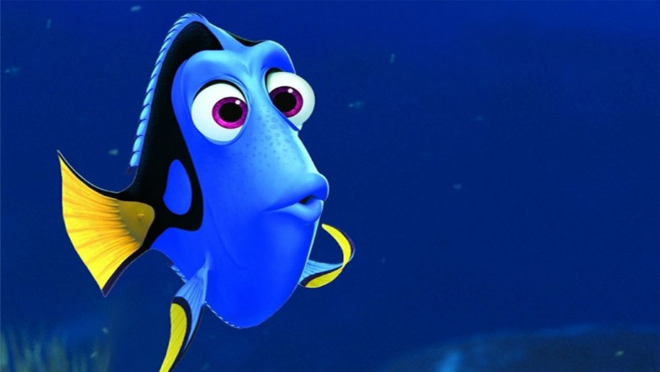

Agneet Chatterjee
I am a junior year CS Undergrad at Jadavpur University, living in Kolkata, India.
I enjoy programming and learning new things in Computer Science. Thinking and Tinkering, is where I wish to stand out. I have a few side projects which I maintain(which I shall update as time turns, slowly). Mostly I spend my time with C, C++ and Python. I like exploring life and logic, failing at one, succeeding at another.
You see Dory on the top? I will have this face whenever you'll tell me about your work. Most of the time I'll be amazed, dazed and confused, all at the same time. There is so much to know.I hope to know, enough to make a difference!
Contact
agneet257@gmail.com
Open source
Feel free to drop me an email if you want to know more about what is written here.
Last modified: Sept 22 00:58:00 IST 2017